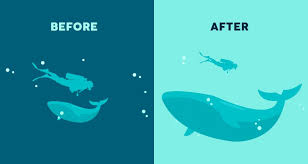
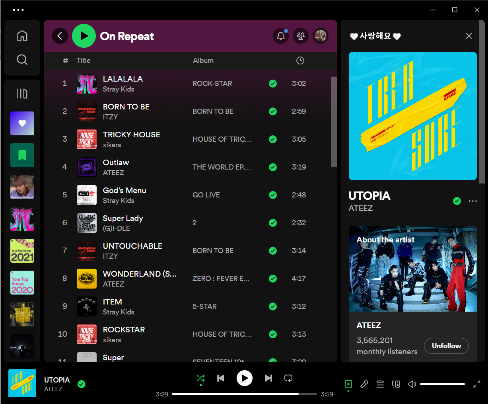
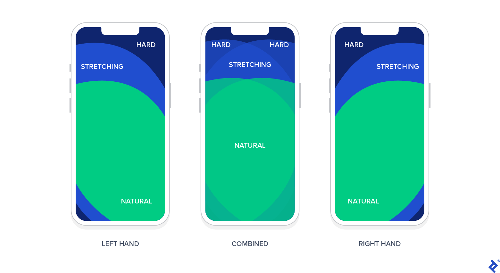
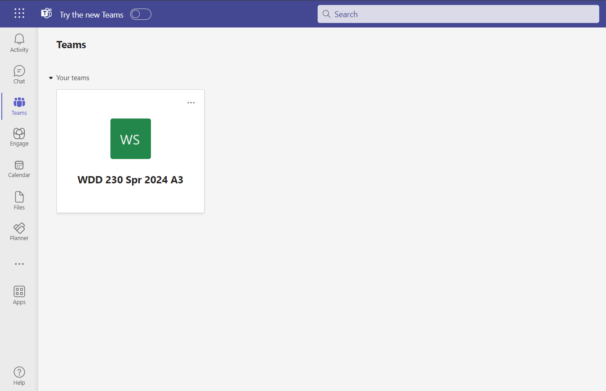
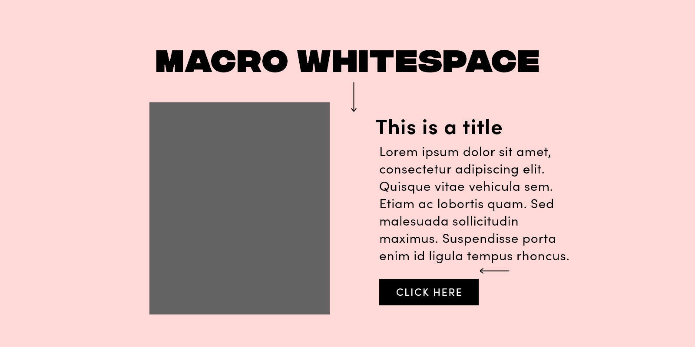
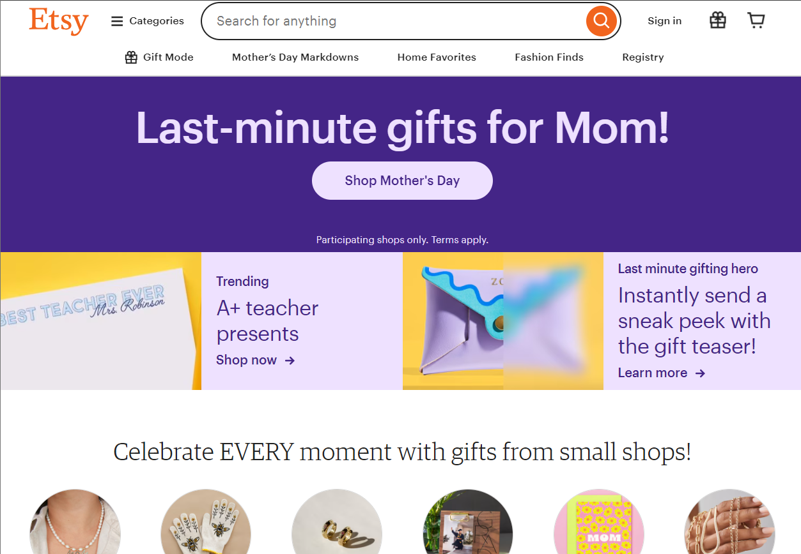

Visual Hierarchy
Spotify Homepage
In graphic design and web design it is very crucial that we focus on how it looks and make it so that the human eye does not become overwhelmed by the color or placement of items arcoss the screen or design. So visual hierarchy is where the eye goes first and where it trails next. In this example it is of my Spotify page. Immediately my eyes go to the cover of the song currently playing then to the options in the playlist itself.
Fitt's Law
MS Teams
Fitt's Law is the focus of UX so that means how it works for the ease and understanding of the person using the internet. Here is the example of MS Teams were all the links and other parts to thw website are all stored on the left task bar and the main link to the most used teams group is the largest and made easier to access.
White Space and Clean Design
Etsy Homepage
In order to have a clean space and easy to read website, I thought of Etsy and the fact that it is a shopping platform there are many places for adds and popups, but they keep it clean and easy for the eyes to travel across the screen as they process and filter for something they are trying to look for. The white space also creates blank space to separate things from one another.